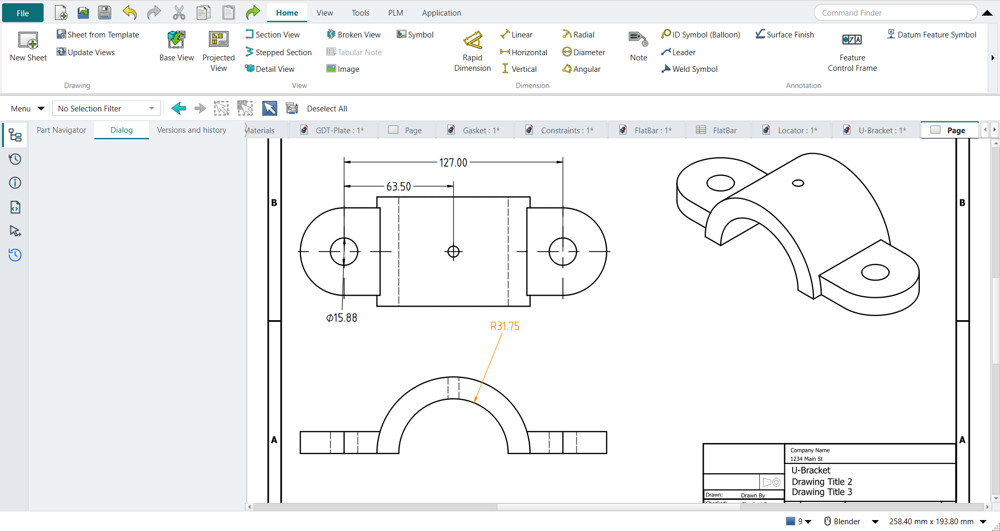

Tutorial N: The U-Bracket drawing
| Book |
Shih, Parametric Modeling with Siemens NX, ch. 8 (after Tutorial M) |
| You learn |
Sheet size and projection, view styles, smooth edges, dimension settings, Hide and Show, center marks, associativity |
| Sizes |
Tutorial M’s bracket; the hole changes from Ø19.05 to Ø15.875 mm (the book’s Ø0.750 → Ø0.625 in). |

In short
-
Ctrl+Shift+D, New Sheet: template ANSI A, Third angle; later swapped for ANSI B.
-
Base View front, with hidden lines; a second Base View from the top, lined up above it; an isometric one.
-
Reference dimensions on the top view; Smooth Visible off on the isometric view; FlipArrowheads on the diameter.
-
Ctrl+B hides two dimensions; select them in the Part Navigator and Ctrl+Shift+K shows them.
-
Center Mark on the arcs; a Radial dimension; two decimals with Format Spec
%.2f. -
Ctrl+M: the hole to Ø15.875; Ctrl+Shift+D: the drawing has followed.
Step by step
| # | In the book (NX) | In FreeCAD NX-Style | Result | Notes |
|---|---|---|---|---|
N1 |
File > Drafting |
Ctrl+Shift+D |
same |
TechDrawWorkbench |
N2 |
Sheet: Inches, Third Angle, A-8.5X11, scale 1:1, OK |
ribbon 'Home › Drawing > New Sheet'; the sheet’s template, projection and scale |
differs |
template ANSIA_Landscape.svg, projection Third angle. NX asks in one Sheet dialog; FreeCAD’s New Sheet uses the default template, and size, projection and scale are the sheet’s properties. Units follow the preferences (mm here) |
N3 |
Base View: Front; View Style: hidden lines dashed 0.35, visible lines 0.70; place it low on the sheet |
body selected + ribbon 'Home › View > Base View', MB2; the view’s style properties |
differs |
16 visible, 34 hidden edges. NX sets the style in the view’s Settings dialog; TechDraw has Hard Hidden and the line widths in the view’s properties |
N4 |
Projected Top view above the Front view |
a second Base View, direction Top, aligned above |
differs |
as in tutorials D and H: NX drags projected views off the base view; FreeCAD’s Projected View is a projection group, so a Base View looking down stands in, lined up with the front view |
N5 |
MB3 > Edit Sheet: B-11X17 |
the sheet’s template set to ANSI B |
differs |
template ANSIB_Landscape.svg; the views keep their places. NX changes the size in Edit Sheet; FreeCAD swaps the template |
N6 |
Base View: Isometric, to the right |
body selected + ribbon 'Home › View > Base View', isometric direction |
same |
|
N7 |
Hide the Datum Coordinate System and the view’s cross hair |
- |
same |
nothing to hide: TechDraw draws only the solid, and NXStyle keeps the Body’s origin hidden (origin shown: False) |
N8 |
Drafting Preferences: dimension text Horizontal (ANSI) |
Preferences > TechDraw > Dimensions > Standard and Style = ASME Inlined |
differs |
was ASME Inlined |
N9 |
Command Finder > Feature Parameters: the model’s dimensions on the views |
- |
missing |
TechDraw has no command that brings a feature’s sketch dimensions onto a view; its dimensions are reference dimensions measured from the view (next steps). NX’s feature dimensions also drive the model from the drawing |
N10 |
Instead: reference dimensions on the top view (5.000, 2.500, Ø0.750 in) |
cosmetic vertices on the hole centres; ribbon 'Horizontal' (twice) and 'Diameter' |
differs |
measured (mm): {'centres': 127.0, 'to the middle': 63.5, 'hole': 19.05}, the book’s 127.00, 63.50 and Ø19.05. TechDraw dimensions need vertices at arc centres (as in tutorial H) |
N11 |
Isometric view: Settings > Smooth Edges off |
the view’s Smooth Visible property |
same |
smooth (tangent) edges were shown, as in NX, and are now off |
N12 |
Edit the diameter dimension: Arrow Out |
the dimension’s 'FlipArrowheads' property |
differs |
arrow properties: ['ArrowStyle', 'Arrowsize', 'FlipArrowheads'] |
N13 |
Immediate Hide: the two dimensions in the top view |
both selected + Ctrl+B (Hide) |
same |
hidden [True, True] |
N14 |
Show (Ctrl+Shift+K): the two dimensions back |
selected in the Part Navigator + Ctrl+Shift+K |
same |
shown [True, True]; NX picks hidden objects in a list, here they are picked in the Part Navigator |
N15 |
Center Mark: the two outer arcs and the drill in the top view |
3 arcs selected + ribbon 'Home › Centerline and Hatch > Center Mark' |
same |
center lines 0 → 0, cosmetic edges 0 → 6; the book deletes NX’s automatic centre lines first: TechDraw adds none by itself |
N16 |
Radial dimension on the bottom arc of the front view |
arc selected + ribbon 'Home › Dimension > Radial' |
same |
R31.75 mm (the book’s R1.250 in) |
N17 |
Edit Settings: the 5 and 2.5 dimensions with 2 decimals and trailing zeros |
the dimensions' Format Spec = %.2f |
differs |
NX: Edit Settings > Text > decimals; TechDraw: the format spec (shown in the preferences units) |
N18 |
Modeling: Base feature > Sketch Section, the diameter 0.750 → 0.625, Finish Sketch, OK |
Ctrl+M; the base sketch’s diameter typed (0.625 in = 15.875 mm) |
same |
volume 142208.8 mm^3 (expected 142209.3) |
N19 |
Drafting: MB3 on the drawing > Update; the diameter shows 0.625 in |
Ctrl+Shift+D; the sheet updates by itself |
same |
diameter dimension now Ø15.875 mm; TechDraw keeps the sheet up to date (the page’s Keep Updated), NX marks it out of date and asks for Update |
| Result | Means |
|---|---|
same |
The book’s NX steps work as written. |
differs |
It works, but the FreeCAD way is different; the notes say how. |
limit |
The book’s way fails in FreeCAD itself; a workaround follows in the next steps. |
missing |
FreeCAD has no such function; a stand-in follows. |
skipped |
Not replayed; the notes give the reason. |
FAILED |
Did not work. |
What differs from NX
-
Size, projection and scale are the sheet’s template and properties, not a Sheet dialog.
-
TechDraw has no Feature Parameters: reference dimensions measured from the view stand in; they follow the model but do not drive it.
-
The sheet updates by itself; NX marks it out of date and asks for Update.